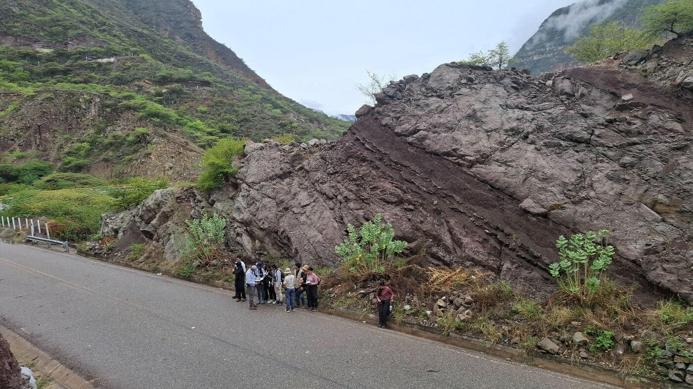
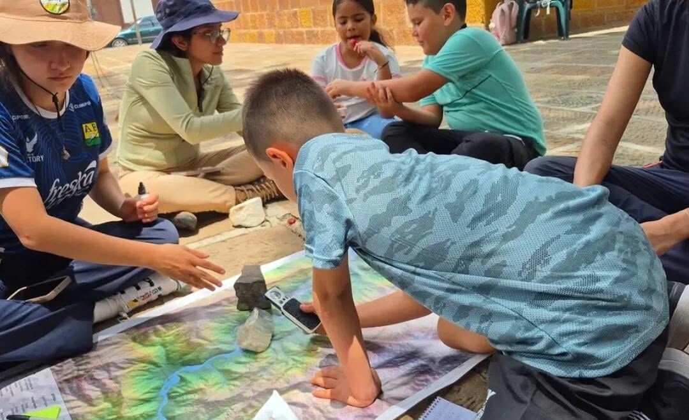
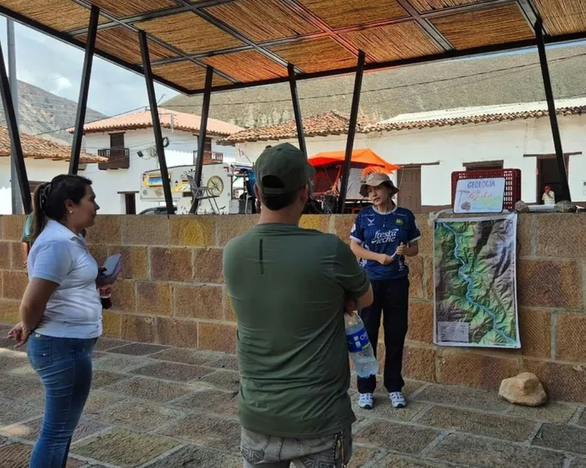

Semillero de Geología Estructural y Tectónica
Estudiamos fallas, pliegues y fracturas para entender cómo se ha formado y transformado el territorio, y llevamos ese conocimiento a estudiantes y comunidades de Santander.

Entender la Tierra y compartirlo
Somos estudiantes de Geología que se reúnen cada semana para aprender, investigar y divulgar la geología estructural.
-
Talleres, cursos y charlas para interpretar datos y estructuras: brújulas, cortes geológicos, proyección estereográfica, mecanismos focales e interpretación sísmica.
-
Salidas a afloramientos de Santander y Antioquia para medir, dibujar e interpretar fallas, pliegues y deformación en las rocas.
-
Jornadas con colegios y comunidades, como Los Santos y Cepitá, para que la gente conozca la geología del territorio que habita.



Conociendo la geología de Cepitá
Durante dos días compartimos con la comunidad de Cepitá, en el Cañón del Chicamocha: charlas sobre la Falla de Bucaramanga y el Nido Sísmico, juegos para reconocer rocas y caminatas por Loma Colorada y el río Umpalá.
Fue un espacio para enseñar, pero también para escuchar y aprender del conocimiento que la comunidad tiene de su territorio.
Actividades
En Instagram
“No es necesario llegar sabiendo todo; lo importante es tener curiosidad y disposición para aprender.”
¿Quieres contactarnos?
Si quieres ser parte del semillero, proponernos una charla, una salida o un trabajo conjunto, o simplemente tienes una pregunta, escríbenos al correo.